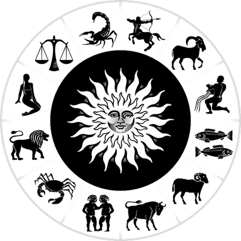

The
Daily Prophet
Something interesting during these sad times
New game this Sunday!

page 6
Todays's weather
qwertyopo
North: rain & fog
East: sun
West: clouds
South: sun & rain
Zodiac signs
Y ou are invited to Hogwarts for an unforgettable Halloween full of magic, fun and, of course, fear! Join us on this special night where Hogwarts Castle will be decorated with pumpkins and spider webs, and a grand festive feast awaits you in the Great Hall.Don't miss the costume contest, where the best wizard attire will be rewarded with a magical prize!

After dinner, you'll be treated to a fun competition on the Quidditch pitch, where you can test your agility by controlling broomsticks, dodging bats and trying to catch ghost balls. The night will end with a Spectral Ball with the Hogwarts ghosts, and at midnight we'll have a grand fireworks display! Dress up in your spookiest costume, grab your wand and get ready for a magical Halloween!

Every year, in March, Professor McGonagall takes a week's vacation and go somewhere. And then for a whole year the whole of Hogwarts don't know where to put the kittens.
Iingredients of cream beer:
- Apple cider or shorley.
- Cream 20%.
- Butterscotch
- Plombiere
- Butter
- Spice mix: cinnamon, cardamom, ground ginger


In July 2024, a baby hippo was born in a Thai zoo and instantly won the love of the public, The Pattaya News reported. The publication notes that families with children visiting the zoo are eager to see and photograph the adorable pygmy hippo. This is the seventh baby born to a pair of parents, Jonah and Tony, at Khao Kheow Open Zoo.
The baby has been named Nong Mu Deng and his photos continue to grace the internet. More recently, this rare species of pygmy hippo has also joined the ranks of zoo residents in the Czech Republic. The popularity of the baby is so great that even simple things with his image gain millions of views on social networks.